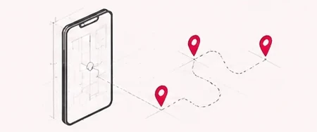
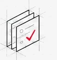
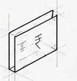
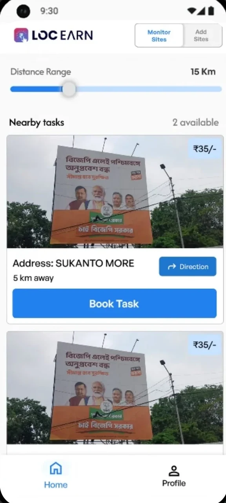
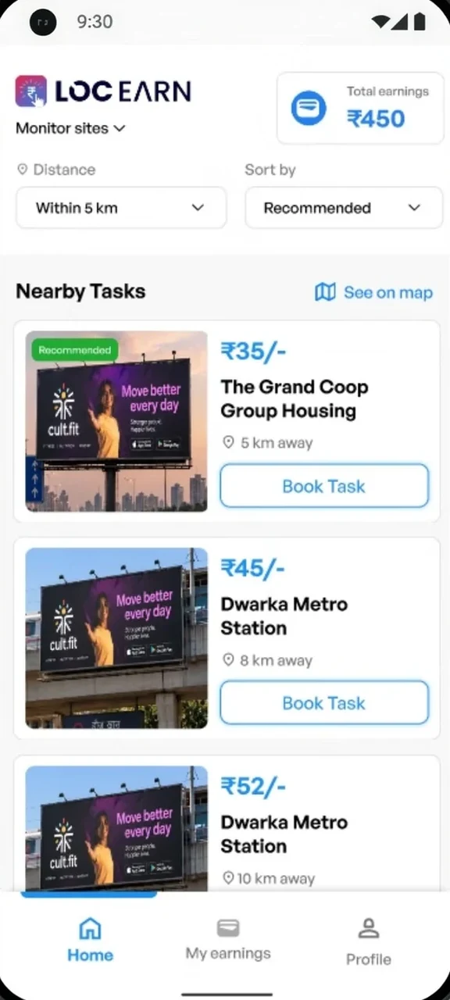
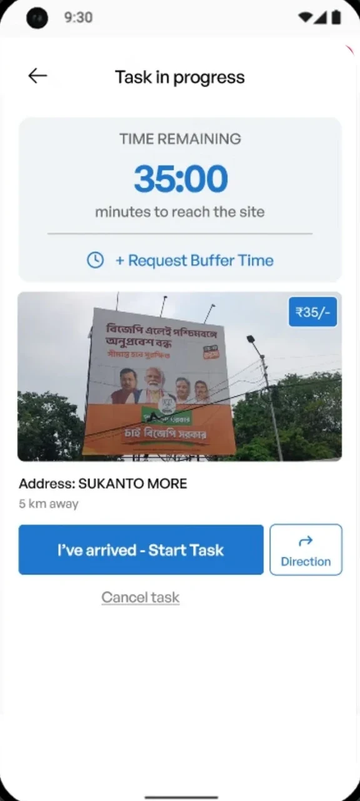
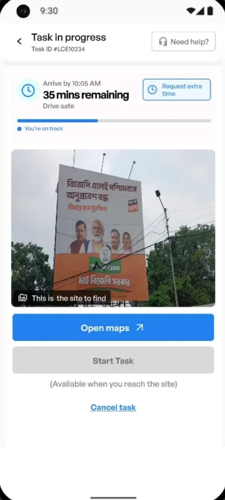
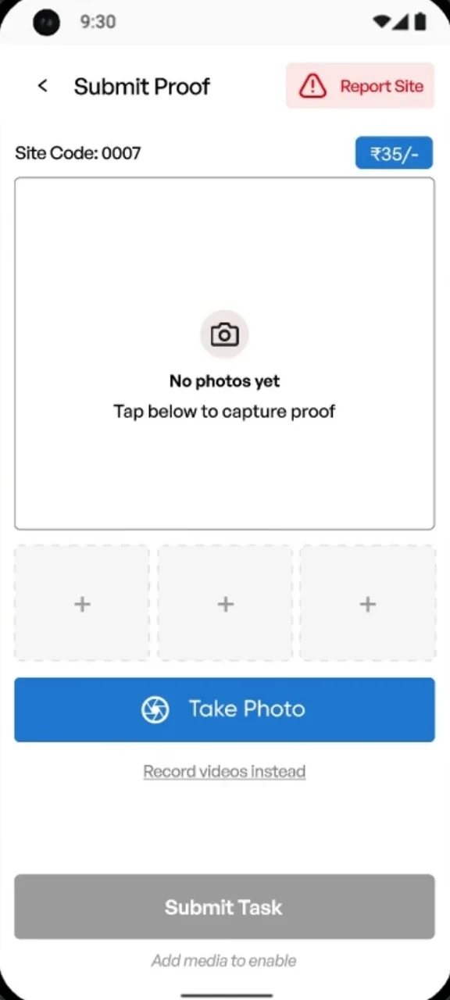
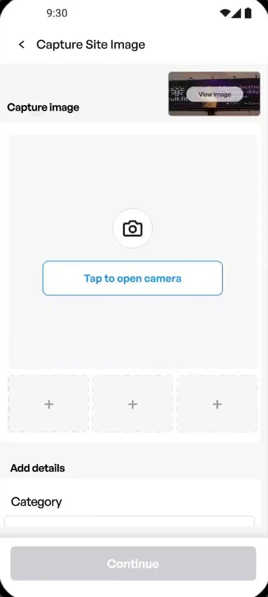

Building an independent verification network of outdoor ad sites across 20+ districts.
Independent, on-ground proof for outdoor campaigns, captured by a distributed rider network.
My roleSolo Product Designer
Product statusShipped · Live product
Product scaleAt a glance
5,000+Sites monitored
400+Active riders
20+Districts covered
01Overview
What is LocEarn?
LocEarn connects brands running outdoor advertising campaigns with riders who independently verify ad placements on the ground.
How it works
Visit locationsRiders go to assigned ad sites
→
Capture proofTake real-time photos of the ad placements
→
Get paidEarn for verified submissions
Riders visit assigned locations, capture real-time proof, and get paid for verified submissions.
My role
Solo Product Designer
Owned the rider experience from core flows and product decisions to testing, iteration, and developer handoff.
The goal
Help brands independently verify ad placements and catch campaign issues while they’re still running.
Prototype
Try the rider app
An interactive prototype of the LocEarn rider app, so you can walk through the flow yourself.
Interactive prototype
The prototype embed goes here.
The problem
Brands couldn’t independently verify their outdoor ads.
Outdoor advertising brands relied on vendors to install their ads and report on campaign execution. But with vendors also responsible for reporting, brands had no independent way to confirm whether ads were placed correctly or what was actually happening at each site. Scheduled inspections also gave vendors time to prepare for checks.
The core challenge
How might we help brands verify outdoor ad placements independently, without alerting vendors in advance?
02So we asked
What if verification came from someone outside the campaign?
The business needed independent verification of outdoor campaigns. Our challenge was to create a simple enough experience for riders to consistently find, complete, and submit verification tasks at scale.
Key design challenge
How might we help brands get reliable, on-ground proof at scale?
03Options
Who can verify sites without the vendor knowing?
We explored multiple ways to get independent, on-ground verification. Three had clear limitations, so we chose a rider-based approach that could scale.
AUse vendor network
Same trust problem
Vendors would still be verifying their own work.
Rejected
BHire field agents
Too expensive
Full-time staff for every city would be costly and not viable at scale.
Rejected
CPartner with delivery companies
Not scalable
Dependent on third-party contracts, availability windows, and pricing.
Rejected
DEveryday people

Incentivised with money
Thousands already move through these cities daily. They just needed a reason to stop and look.
400+Riders onboarded via social ads
Selected
Act II
The first version
Earning trust, building V1, and hearing what riders said
06V1
Built quickly, then tested with riders.
We created a high-fidelity prototype and tested it with riders to identify usability gaps before refining the experience.
The rider journey (V1)
01DiscoverBrowse available tasks near you.
→
02EvaluateSee reward, distance and task details.
→
03NavigateGet directions to the site.
→
04VerifyCapture real-time photos of the ad site.
→
05SubmitComplete the task and get paid.
Key design decisions
01

Make tasks easy to follow
A clear, step-by-step flow helps riders understand what to do next.
02

Show the value upfront
Displaying the reward and distance helps riders decide quickly.
03
Make on-ground execution easier
Clear arrival details and map access reduce confusion on-site.
User flow
The constraints
We had to design within a few non-negotiables. These constraints shaped what we could change and helped us focus on what would create the most impact for riders.
Proof had to be trustworthy.
Location, timestamp and live capture were already part of the system.
Riders are often on the move.
They could be travelling to a site, checking the app in between.
Every task has a deadline.
Riders needed to reach the site within the allotted time.
Trust starts before the first task.
New riders are spending their time and fuel before they know if it’s worth it.
The challenge was to make the flow easier to use while the riders are on the move.
07Feedback
Four friction points in the rider journey.
We tested the prototype with riders and these were the most common issues that came up.
“Photo le li, ab kya karna hai? Kahan submit karun?”
Proof & reporting felt disconnected
04
“Itna personal information kyun chahiye?”
Onboarding asked too much
The design shift
FromInformation overload before action
→
ToA task-first, step-by-step experience
Act III
The fix and the result
What changed, what shipped, and what I would do next
08V2
From more information to one action at a time
The redesign · 01
Let riders see the value before asking for commitment.
1
Complete details when neededMoved non-essential information to later in the journey, when it becomes relevant.
2
Let riders explore firstRiders can understand the app and available tasks before completing their full profile.
3
Move profile completion laterAdditional information is collected when it becomes relevant, instead of blocking task discovery.
Trade-offFaster time-to-value vs. complete information upfront. We moved profile completion later so riders could explore tasks first. The trade-off was collecting less information upfront and asking for it only when it became necessary.
V1V2
Drag to compare
The redesign · 02
Make the decision easier before the rider starts travelling.
1
Make more tasks easy to compareRiders can quickly compare what each task pays before deciding where to go.
2
Reduce the effort to find a taskMake nearby tasks easier to scan within a practical travel distance.
3
Make tasks easier to compareBring reward, distance and action into the same visual hierarchy.
Trade-offMore tasks visible vs. less detail per task. We reduced card-level detail to help riders scan and compare more opportunities within their travel range.


V1V2
Drag to compare
The redesign · 03
The action changed with the rider’s state.
1
Make the deadline clear“Arrive by” gives riders a clear target while they’re on the move.
2
Design for the journeyNavigation, time remaining, and the site image stay visible when riders may be checking the app on the move.
3
Make actions state-based“Open Maps” is the primary action while travelling. “Start Task” becomes available only after reaching the site.
Trade-offMore guidance during the journey vs. a simpler task screen. We added navigation context, time remaining and state-based actions without making the rider figure out what to do next.


V1V2
Drag to compare
The redesign · 04
Make the proof submission flow easier to follow.
1
Make capture the primary actionThe V2 screen makes it immediately clear where to start capturing proof.
2
Show what has been capturedRiders can see their submitted photos and the remaining slots before moving forward.
3
Made site reporting part of the flowThe flow of completing site submission now follows the natural order of completing a proof task. Riders can capture proof and report site issues within the same task flow.
Trade-offGuided flow vs. flexibility. We prioritized a focused sequence for the most common submission path, which meant giving less prominence to secondary capture options and actions.


V1V2
Drag to compare
09Final screens
The shipped rider journey
Open Camera · Review PhotoTask completed · Earning confirmedSites history · Payment trackingReturn state · Active task reminder
10Impact
Beta to real-world deployment
The product launched in beta across Delhi NCR before expanding the rider model to West Bengal. Expansion into West Bengal was affected by the state election, which disrupted the planned rollout window.
The beta moved from prototype to real-world deployment.
400+
Riders deployed
Recruited through social ads and onboarded one by one.
20+
Districts covered
Built a distributed rider network across the campaign area.
5k+
Sites monitored
Brands received independent, on-ground verification.
The redesigned rider experience enabled on-ground verification at scale, giving brands an independent way to collect campaign proof.
11Reflection
What I'd do differently
The V2 solved the problems we could see. These are the gaps I’d address next.
01
Design location edge cases earlier
V2 made “Start Task” dependent on reaching the site. The next iteration should define what happens when GPS is inaccurate, unavailable, or the rider reaches the site but isn’t detected.
02
Take testing into the rider's context
Office-based prototype reviews helped us uncover major usability issues. The next iteration should test the experience while riders are actually travelling, navigating and completing a task.
03
Define success metrics before iterating
We used rider feedback to drive V2, but didn’t instrument the V1 → V2 change. Next time, I’d define metrics such as time to first task, task completion and onboarding completion before rollout.